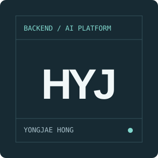

비동기 AI 처리
요청 수용과 실제 완료 처리량을 구분하고, Queue·Worker의 병목을 살핍니다.
BACKEND / AI PLATFORM ENGINEER
AI를 안정적으로 실행하고,
결과를 이해할 수 있는 시스템으로.
비동기 AI 처리부터 Kubernetes 운영, 관측·복구, 로컬 AI 작업 흐름까지 연결하는 Backend / AI Platform Engineer입니다.

홍용재
Backend / AI Platform Engineer
01 / ABOUT
기능 구현에서 멈추지 않고 실제 완료량, 장애 위치, 배포 이후의 복구 가능성을 함께 봅니다.
Queue·Worker 기반 AI 처리와 Kubernetes 운영 환경을 구축했고, 최근에는 AI가 제안한 작업을 사람이 이해하고 통제할 수 있도록 Loom을 설계·구현했습니다.
요청 수용과 실제 완료 처리량을 구분하고, Queue·Worker의 병목을 살핍니다.
지표와 장애 시험으로 실패 위치를 좁히고 다시 실행할 수 있는 구조를 만듭니다.
작업 범위·완료 조건·결정·실행 기록을 이어받을 수 있게 남깁니다.
02 / SKILLS
기술 이름보다, 실제 프로젝트에서
어떤 경계를 맡았는지 설명합니다.
Python · FastAPI · TypeScript · NestJS
API와 비동기 작업 경계 설계
PostgreSQL · Redis · SQLite
작업 상태·속도 제한·로컬 데이터 관리
Kubernetes · Docker · Linux · KEDA
실행 환경과 backlog 기반 확장
Prometheus · Grafana
완료량·대기열·장애 경계 관측
ArgoCD · Jenkins
버전이 분명한 배포와 운영 흐름
이 페이지는 HTML · CSS · JavaScript로 직접 구현했습니다.
03 / PROJECTS
GitHub 저장소의 실제 정보와
프로젝트에서 맡은 경계를 함께 정리했습니다.
GitHub 프로젝트를 준비하고 있습니다.
04 / CONTACT
AI를 실제 제품과 운영 환경에 연결하는 플랫폼·백엔드 역할, 프로젝트 피드백에 대해 이야기하고 싶습니다.
developsvai5096@gmail.com